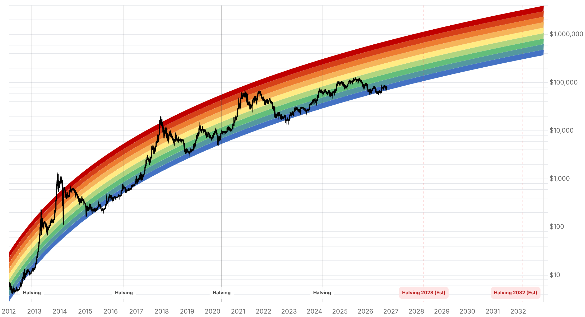

Reporte financiero
BTC cotiza en vivo a USD 80.579,97 (07:17 UTC, +0,19% intradía vs. cierre previo de USD 80.428,31), consolidando los fuertes niveles alcanzados el 4 de noviembre tras confirmarse el vuelco del Congreso de EE.UU.: AP llamó el Senado para los demócratas la noche del 3 de noviembre -tras que Iowa les diera los escaños necesarios, con un vuelco neto de siete bancas-, sumándose al control de la Cámara de Representantes ya proyectado el día anterior. Esto despeja la incertidumbre del 99% probabilístico de Kalshi que seguía sin confirmación formal en el reporte de ayer (cuando BTC cotizaba en USD 77.951,10, recién recuperado del mínimo de varios meses de ~USD 75.700-75.740 de la noche electoral). Lo nuevo desde entonces: el mercado interpretó el resultado -gobierno dividido, con el presidente manteniendo poder de veto- como un alivio de riesgo antes que como una amenaza regulatoria inmediata. BTC subió con fuerza entre el 4 y el 5 de noviembre -+5,4% en 24h según CoinGecko/CoinGabbar (a USD ~80.564-80.580), con un cierre diario del 4 de noviembre en USD 80.405,29 frente a USD 77.345,05 el día previo- y Hokanews (citando a Coin Bureau) reportó ~USD 386 millones en posiciones cortas liquidadas en una ventana de cuatro horas sin especificar, en lo que describe como una reversión del 'midterm-related uncertainty-driven decline'. El repunte no fue exclusivo de cripto: según el reporte diario de mercados 'Why It Moved', el Dow Jones subió 3,03% (+1.569 puntos) el 4 de noviembre -su mejor día desde abril de 2025-, el S&P 500 +1,58% y el Nasdaq +1,44% (Apple superó los USD 5 billones de capitalización bursátil), el oro saltó 3,73% a un récord de USD ~4.065/oz y la plata +5,0% a USD ~52,24/oz, mientras el crudo WTI se desplomó 7,6-8% a USD ~88,77-95,01/barril. El mismo reporte atribuye el movimiento tanto al 'gobierno dividido ya puesto en precio' como a comentarios del líder demócrata en el Senado, Chuck Schumer, quien se habría comprometido a impulsar el fin de la guerra con Irán (parafraseado por CoinGabbar, sin cita textual disponible ni fuente primaria). El Fear & Greed Index saltó de 34 (ayer) a 50 (Neutral) hoy -un salto de 16 puntos en un día-, pero el consenso técnico consultado (Cryptonomist/Cryptonews.net) describe el quiebre sobre USD 80.000 como 'no confirmado': el RSI diario cae a 38,1, el MACD diario sigue negativo, y se necesitaría un cierre horario sobre la resistencia horaria (~USD 80.277) para confirmar continuidad alcista, frente a un cierre horario bajo el soporte horario (~USD 79.836) que reabriría presión bajista. El reporte 'Why It Moved' coincide en que BTC 'debe sostenerse sobre USD 80.000-80.500' para pasar de un sesgo 'bajista-a-neutral' a uno francamente alcista; una caída de vuelta bajo USD 78.000 reabriría el mínimo de USD 75.600. Ese mismo reporte cita una estimación de JPMorgan de un 'piso de costo de producción' de USD 94.000 -muy por encima del precio actual-, y recuerda que BTC sigue muy por debajo de su máximo de 52 semanas de USD 107.428. Sobre la composición del nuevo Congreso: Stand With Crypto (grupo respaldado por Coinbase) contabiliza 19 senadores y 226 representantes 'pro-cripto' electos, aunque ninguna de las fuentes consultadas da el desglose completo de escaños por partido más allá de confirmar el vuelco de control, y dos carreras (Alaska y Mississippi) seguían sin llamar formalmente según reportes del 4 de noviembre. Ejecutivos de la industria reaccionaron sin citas textuales verificables: Brad Garlinghouse y Stuart Alderoty (Ripple) habrían señalado que legisladores pro-cripto de ambos partidos ganaron sus bancas, y Grayscale y BlackRock habrían planteado que el control demócrata podría enlentecer la legislación cripto sin cambiar la tendencia de largo plazo -ambas, parafraseadas por CoinGabbar, sin declaración directa citable-. Sin novedades verificadas desde ayer en: la decisión de MSCI sobre Strategy (sigue pendiente para el 11 de noviembre, vigente desde el 30), la vulnerabilidad de BTCPay Server 2.4.7, el movimiento de fondos del hackeo de Binance en Tron, la venta de la ballena de Solana, el Pleno del PCCh, la apelación del Reino Unido sobre los 61.000 BTC y la respuesta de Cantor Fitzgerald al requerimiento del senador Blumenthal.
La noche del 3 de noviembre, AP llamó el control del Senado para los demócratas después de que los resultados de Iowa les dieran los escaños necesarios, completando un vuelco neto de siete bancas (de una minoría de 53-47 bajo control republicano a mayoría demócrata). Esto se suma al control de la Cámara de Representantes, ya proyectado el día anterior, y confirma formalmente lo que el reporte de ayer describía como un 99% de probabilidad en Kalshi pero sin llamado oficial. Dos carreras al Senado -Alaska y Mississippi- seguían sin llamarse formalmente según reportes del 4 de noviembre (en Mississippi, el demócrata Scott Colom aventajaba por apenas 65 votos de 945.587 escrutados, con ~95% del conteo). El resultado deja un gobierno dividido en Washington, con el presidente manteniendo poder de veto sobre cualquier legislación que apruebe el nuevo Congreso demócrata a partir de enero de 2027.
BTC subió 5,4% en 24 horas según CoinGecko (cierre diario del 4 de noviembre en USD 80.405,29, frente a USD 77.345,05 el día previo), y Hokanews -citando a Coin Bureau- reportó ~USD 386 millones en posiciones cortas liquidadas en una ventana de cuatro horas sin especificar. El movimiento coincidió con un rally generalizado de activos de riesgo: el Dow Jones subió 3,03% (+1.569 puntos, su mejor día desde abril de 2025), el S&P 500 +1,58% (todos los sectores en verde salvo energía) y el Nasdaq +1,44% (Apple superó los USD 5 billones de capitalización bursátil, Microsoft +6%). El oro tocó un récord de USD ~4.065/oz (+3,73%) y la plata subió 5,0% a USD ~52,24/oz, mientras el crudo WTI se desplomó 7,6-8% a USD ~88,77-95,01/barril y el dólar tocó un mínimo de un mes. El reporte diario de mercados 'Why It Moved' atribuye el repunte bursátil a un 'gobierno dividido ya puesto en precio' tras la elección, y menciona -sin cita textual ni fuente primaria verificable- que el líder demócrata en el Senado, Chuck Schumer, se habría comprometido a impulsar el fin de la guerra con Irán, lo que según esa misma fuente ayudó a explicar la caída del petróleo y el repunte de activos de riesgo.
El índice de sentimiento cripto (alternative.me) saltó 16 puntos en un día, de 34 (Fear, ayer) a 50 (Neutral, hoy) -el mayor movimiento diario reciente, aunque sigue por debajo del nivel de 'Greed' de hace un mes (73)-. Sin embargo, el análisis técnico de Cryptonomist/Cryptonews.net (consulta del 4 de noviembre) describe el movimiento sobre USD 80.000 como 'no confirmado': el RSI diario cae a 38,1 (débil) y el MACD diario sigue en negativo, pese a que el precio está sobre sus medias móviles de 20, 50 y 200 días. La confirmación alcista requeriría un cierre horario sobre la resistencia horaria de ~USD 80.277 (con el siguiente objetivo en el punto medio de las bandas de Bollinger diarias, ~USD 80.407, y luego la banda superior horaria en ~USD 81.057); la invalidación bajista sería un cierre horario bajo el soporte horario de ~USD 79.836. El reporte 'Why It Moved' coincide en calificar el sesgo como 'bajista-a-neutral': BTC 'debe sostenerse sobre USD 80.000-80.500' para cambiar esa lectura, mientras que una caída de vuelta bajo USD 78.000 reabriría el mínimo de USD 75.600 de la noche electoral. Como referencia de largo plazo, ese mismo reporte cita una estimación de JPMorgan de un 'piso de costo de producción' de USD 94.000 -muy por encima del precio actual-, y BTC sigue muy por debajo de su máximo de 52 semanas de USD 107.428.
Stand With Crypto, el grupo de defensa respaldado por Coinbase, contabiliza 19 senadores y 226 representantes 'pro-cripto' electos en el nuevo Congreso -cifra que no viene desglosada por partido en las fuentes consultadas, y que no debe confundirse con el control formal de las cámaras, que quedó en manos demócratas-. Según CoinGabbar (sin cita textual ni fuente primaria), Brad Garlinghouse y Stuart Alderoty, ejecutivos de Ripple, habrían señalado que legisladores pro-cripto de ambos partidos ganaron sus bancas, mientras que Grayscale y BlackRock habrían planteado -también sin declaración directa citable- que el control demócrata del Congreso podría enlentecer el avance de legislación cripto sin alterar la tendencia de adopción de largo plazo. Estas reacciones se presentan aquí como paráfrasis de una fuente secundaria (agregador), no como citas verificadas, y se marcan explícitamente por esa limitación en vez de presentarlas como declaraciones textuales.
La decisión final de MSCI sobre si excluir a Strategy de sus índices sigue pendiente para el 11 de noviembre (entrada en vigor tras el cierre del 30 de noviembre); no se encontró información que adelante el resultado más allá de lo ya reportado (buffers en los umbrales de elegibilidad, ~13 millones de acciones MSTR en fondos indexados, ~USD 1.800 millones). No se hallaron novedades sobre la vulnerabilidad de BTCPay Server 2.4.7, el movimiento de fondos del hackeo de Binance en la red Tron, la venta de la ballena de Solana, la resolución del Pleno del PCCh, la apelación del Reino Unido sobre los 61.000 BTC (sigue proyectada para 2027) ni la respuesta de Cantor Fitzgerald al requerimiento del senador Blumenthal -todos temas ya cubiertos en reportes anteriores.
| Periodo | Valor |
|---|---|
| 30 oct | 77198.21 |
| 31 oct | 77434.75 |
| 1 nov | 78248.45 |
| 2 nov | 76677.3 |
| 3 nov | 77345.05 |
| 4 nov | 80405.29 |
| 5 nov (en vivo) | 80579.97 |
| Periodo | Valor |
|---|---|
| Hoy | 50 |

El mercado ya descontó el resultado electoral -gobierno dividido, demócratas con control pleno del Congreso pero sin los votos para superar un veto presidencial- como un alivio de riesgo, no como una amenaza regulatoria inmediata. El riesgo de corto plazo pasa ahora a si BTC logra sostenerse sobre la zona de USD 80.000-80.500 (bias 'bajista-a-neutral' según 'Why It Moved') o si el quiebre técnico, descrito como 'no confirmado' por Cryptonomist, se revierte hacia el soporte de USD 78.000 y reabre el mínimo de USD 75.600 de la noche electoral.
La atención regulatoria se traslada ahora a cómo opera en la práctica un Congreso de mayoría demócrata con un presidente que retiene poder de veto -el escenario que Tom Lee (Fundstrat) ya había planteado como limitante para legislación anti-cripto-. La Clarity Act, trabada desde el 15 de septiembre (49 a 50 en el Senado), enfrenta ahora la composición de comités bajo control demócrata; Stand With Crypto cuenta 19 senadores y 226 representantes 'pro-cripto' electos, pero el desglose por partido y el futuro concreto de la ley siguen sin precisarse en las fuentes disponibles. La decisión de MSCI sobre Strategy (11 de noviembre) sigue como el otro frente de riesgo pendiente para MSTR como proxy de Bitcoin, sin cambios desde ayer.
Sin cambios en los objetivos de precio de largo plazo ya reportados en ediciones anteriores (Citigroup, Bernstein, Standard Chartered, Tom Lee, NYDIG, Armstrong). Como referencia adicional, JPMorgan estima un 'piso de costo de producción' de USD 94.000 (según 'Why It Moved', sin detalle metodológico propio verificado), muy por encima del precio actual, mientras BTC sigue a distancia de su máximo de 52 semanas (USD 107.428). El contrapeso histórico de CryptoQuant reportado ayer (BTC más alto doce meses después de las cuatro elecciones de medio término desde 2010, ganancia mediana 63%, superpuesto al ciclo de halving) sigue vigente sin novedades.
El propio análisis técnico consultado (Cryptonomist/Cryptonews.net) califica el escenario diario como 'neutral' y el RSI diario en 38,1 señala debilidad de fondo pese al salto de precio. Un cierre horario bajo el soporte de ~USD 79.836 reabriría presión bajista hacia USD 78.000 y, eventualmente, el mínimo de USD 75.600-75.700 de la noche electoral.
El barrido demócrata de ambas cámaras ya está confirmado por AP, pero el mercado cripto reaccionó con alivio más que con temor -en parte porque el poder de veto presidencial limita el riesgo de legislación anti-cripto unilateral. El dato más relevante para las próximas semanas es la composición final de los comités financieros clave y el destino de la Clarity Act, no el resultado electoral en sí, que ya quedó atrás.
Sin novedades desde ayer, pero la fecha se acerca: la confirmación o no de la exclusión de Strategy de los índices de MSCI sigue siendo un riesgo específico para quienes tengan exposición a MSTR como proxy de Bitcoin, independiente del precio de BTC en sí.